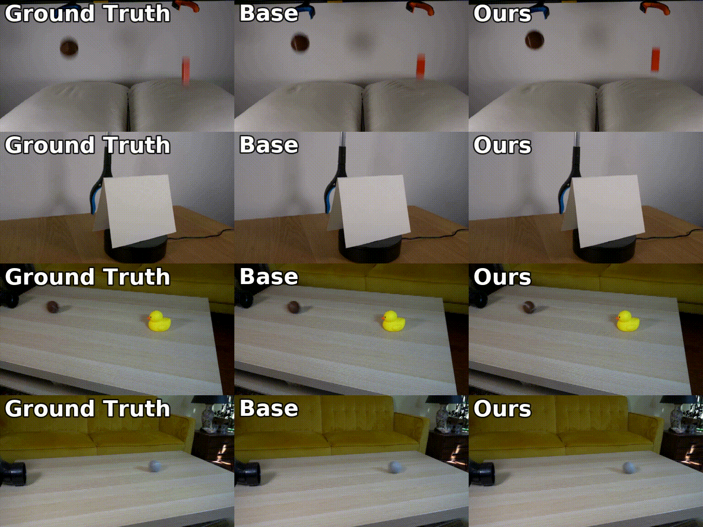
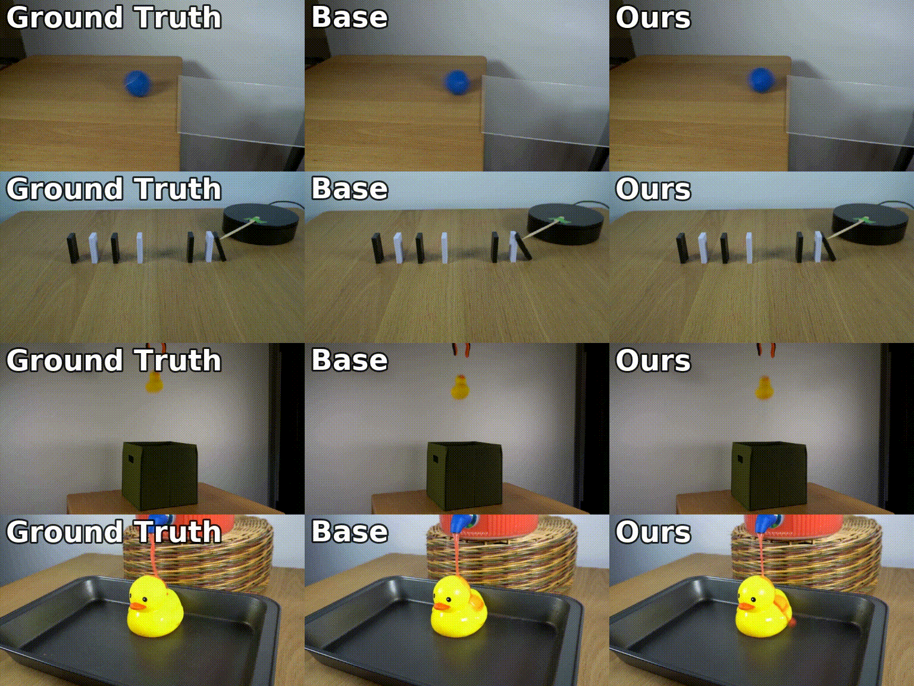
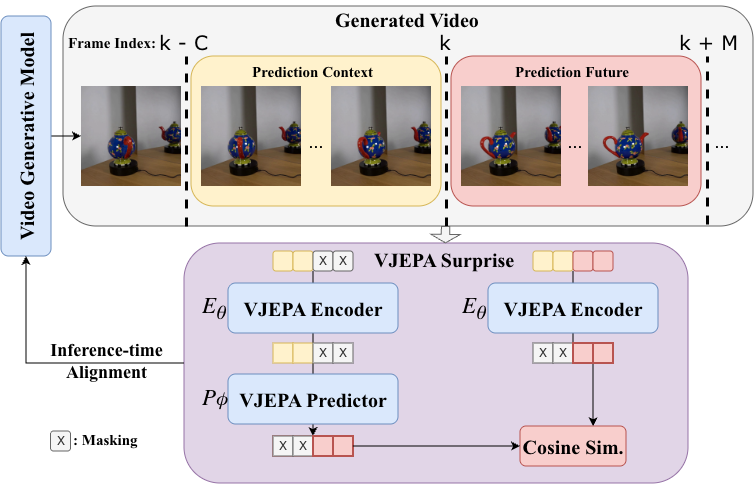

State-of-the-art video generative models produce promising visual content yet often violate basic physics principles, limiting their utility. While some attribute this deficiency to insufficient physics understanding from pre-training, we find that the shortfall in physics plausibility also stems from suboptimal inference strategies. We therefore introduce WMReward and treat improving physics plausibility of video generation as an inference-time alignment problem. In particular, we leverage the strong physics prior of a latent world model (here, VJEPA-2) as a reward to search and steer multiple candidate denoising trajectories, enabling scaling test-time compute for better generation performance.
Empirically, our approach substantially improves physics plausibility across image-conditioned, multiframe-conditioned, and text-conditioned generation settings, with validation from human preference study. Notably, in the ICCV 2025 Perception Test PhysicsIQ Challenge, we achieve a final score of 62.64%, winning first place and outperforming the previous state of the art by 7.42%. Our work demonstrates the viability of using latent world models to improve physics plausibility of video generation, beyond this specific instantiation or parameterization.
In each panel, rows are top: ground truth · middle: baseline · bottom: WMReward. Examples cover rigid-body dynamics, fluid mechanics, object permanence, and buoyancy.


A latent world model encodes video into compact representations and learns a transition function over them, yielding a representation that focuses on physically consistent dynamics rather than pixel statistics. We use the cosine distance between predicted and observed future latents as our reward:
r(x) = ⟨ 1 − cos( ẑfuture, zfuture ) ⟩

We draw from a reward-tilted distribution with three complementary schemes — Best-of-N samples N candidates and keeps the highest-reward video; Guidance (∇) uses reward gradients during denoising via Tweedie's formula; and WMReward (∇+BoN) combines both (default).
WMReward delivers consistent gains across model families on the PhysicsIQ benchmark.
See 5-minute walkthrough for a guided tour of the method and results.
@article{yuan2026inference,
title = {Inference-time Physics Alignment of Video Generative Models with Latent World Models},
author = {Yuan, Jianhao and Zhang, Xiaofeng and Friedrich, Felix and
Beltran-Velez, Nicolas and Hall, Melissa and Askari-Hemmat, Reyhane and
Han, Xiaochuang and Ballas, Nicolas and Drozdzal, Michal and
Romero-Soriano, Adriana},
journal = {arXiv preprint arXiv:2601.10553},
year = {2026}
}We thank our collaborators and reviewers for valuable feedback. This project page template is adapted from the Academic Project Page Template by Eliahu Horwitz.